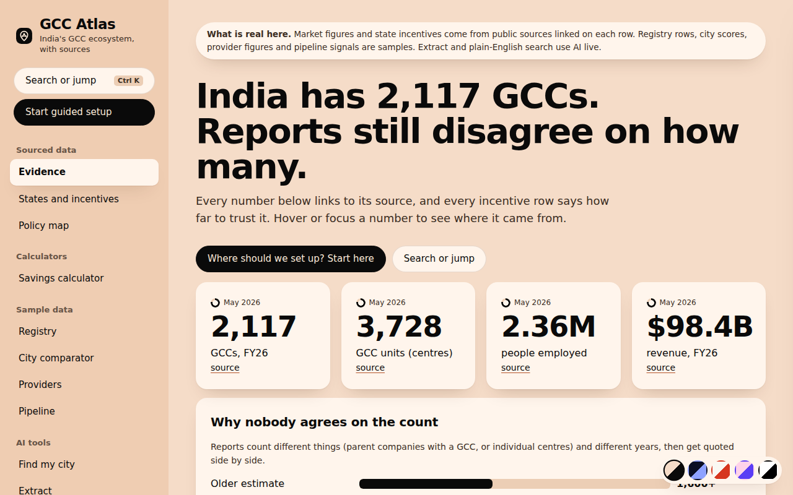
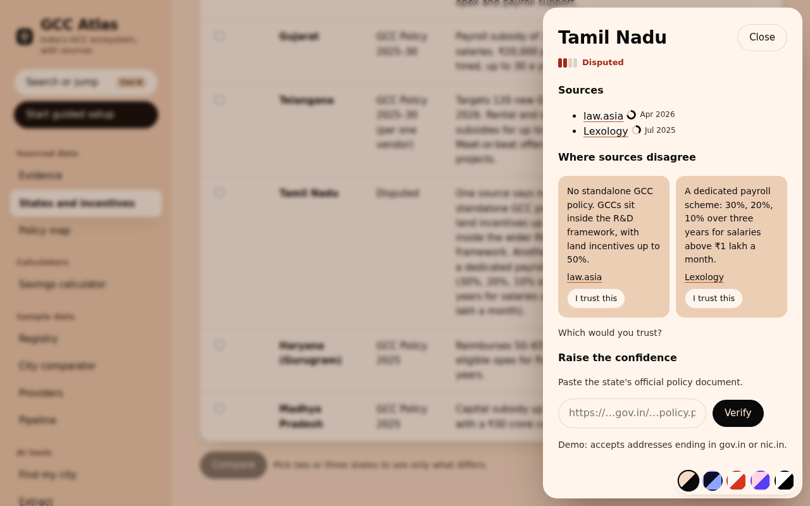
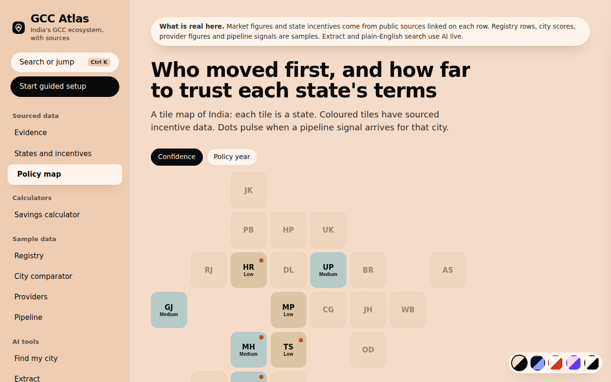
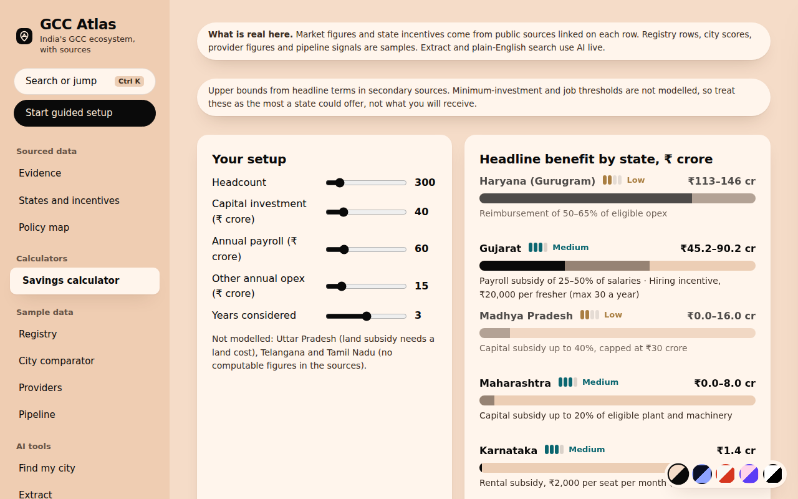

INDIA GCC ECOSYSTEM
Strategy deck and working prototype
Parth Dhairyashil Pawar
parthpawar0108pp@gmail.com
GCC Atlas · 1 / 19
QUESTION 1 OF 4
Seven players. Entrants carry the most cost, and the other six are hurt less.
About $0.7–1.4B a year of incentive value in play. An order of magnitude, to be tested.
Referrals, consultant PDFs, events, cold outreach and brochures.
Solution. One sourced view where every fact shows its source and how far to trust it.
GCC Atlas · 2 / 19
QUESTION 2 OF 4
Scarce, feeds every other product, and gets stronger with every user.
The trust gap. Proof of delivery beats marketing, and providers will pay for it.
The hook for entrants, built mostly on public data.
Solution. Start with the two scarce assets. Office-space and talent data come later. Our scores are judgement, to be tested in interviews.
GCC Atlas · 3 / 19
QUESTION 3 OF 4
Filings, state policies, press, job posts and provider case studies.
AI extracts facts with the quote it used. Every fact keeps its source and a confidence label.
Registry, city comparator, provider scorecards and pipeline alerts.
For whom first. The entrant's India setup lead, free. First revenue comes from providers, who pay for verified profiles and pipeline alerts.
GCC Atlas · 4 / 19
QUESTION 4 OF 4
One comparable, sourced view instead of referrals.
Ranked on delivery, plus qualified leads.
Compared on facts, with a way to keep data current.
A citable, canonical list instead of conflicting reports.
Positioning. The neutral reference layer for India's GCC ecosystem. Every number links to its source, and nobody pays to rank.
GCC Atlas · 5 / 19
Entrant HQs
?
Advisors
?
Lawyers and auditors
?
Real estate
?
Recruiters
?
Payroll and EOR
?
State governments
Each handoff loses information. The ? marks where counts, incentives and delivery records go missing.
Reports quote different totals, and none publishes the list of companies behind them.
Providers are known by their marketing. Who actually delivered is not on record.
Entrants pick cities and partners on word of mouth, and pay for it in time and risk.
GCC Atlas · 6 / 19
Our judgement, to be tested in interviews. Entrants carry the biggest cost, so we build for them first.
PLAYER
HURT
HOW THE ASYMMETRY HURTS
WHAT THEY DO TODAY
Entrant HQ
High
Picks city and partners blind
Referrals, consultant PDFs
Advisors
Medium
Cannot show proof of delivery
Events, case-study decks
Lawyers and auditors
Medium
Cannot see who is about to enter
Cold outreach, referrals
Real estate firms
Medium
Miss entrants before they pick a city
Broker networks, press scanning
Recruiters
Medium
Learn hiring plans too late
LinkedIn mining, job-board alerts
Payroll and EOR
Medium
Compete on price, not on record
Partner lists, word of mouth
State governments
Medium
Offers cannot be compared on facts
Roadshows, brochures
GCC Atlas · 7 / 19
2,117
GCCs, FY26
3,728
GCC units
2.36M
people employed
$98.4B
revenue, FY26
Older reports said 1,600+ GCCs. FY24 estimates said about 1,700–1,800. FY26 says 2,117 companies and 3,728 units. Different years and different units, quoted side by side.
Sources: nasscom–Zinnov India GCC Landscape 2026; BW Businessworld; Business of GCC; Sridhar Pai Tonse (Substack).
GCC Atlas · 8 / 19
~100
new GCCs a year
500+ in five years (nasscom–Zinnov)
×
$46M
average revenue per GCC
$98.4B ÷ 2,117 GCCs (derived)
×
15–30%
of cost from incentives
One source, unverified
=
$0.7–1.4B
a year in play
Order of magnitude only
Averages overstate new centres, which start smaller. Treat this as an order of magnitude.
Not counted: months lost choosing a city, wrong partner choices, and providers' cost of finding leads.
Next step: test these inputs in about ten entrant interviews.
GCC Atlas · 9 / 19
Our judgement, to be tested in interviews. H is high, M medium, L low.
#
OPPORTUNITY
PAIN
WHO PAYS
DATA ACCESS
HARD TO COPY
CALL
1
Verified GCC registry and pipeline
H
Providers
M
H
Build first
2
Provider track records
H
Providers
L
H
Build first
3
City and incentive comparator
H
Entrants (free)
H
L
Ship early
4
Office space and cluster costs
M
Real estate
L
M
Later
5
Talent supply and cost
M
Recruiters, EOR
L
M
Later
Registry and provider records matter most. They are scarce, they feed every other product, and they get stronger with every user.
GCC Atlas · 10 / 19
Filings, state policies, press, job posts and provider case studies.
AI extracts facts with the quote it used. Every fact keeps its source and a confidence label.
Registry, city comparator, provider scorecards and pipeline alerts.
First user: the entrant's India setup lead, free. First revenue: providers, who pay for the pipeline.
GCC Atlas · 11 / 19
Filings, state policy documents, press and job posts. AI extracts facts with the quote it relied on. People review low-confidence items. Providers are confirmed by their clients.
Registry with sources and confidence. State incentive tracker linked to official documents. City comparator. Provider profiles in a small pilot.
Pipeline alerts for paying providers. Office-space and talent datasets. API and reports. State-published data feeds.
Every fact keeps its source and a confidence label, so users can see how far to trust it.
GCC Atlas · 12 / 19
ALTERNATIVE
GOOD AT
GAP
Analyst reports
Authoritative market totals
Annual and aggregate, no live company or provider list
Consultancies and advisors
Tailored setup advice
Paid engagements, so conflicted when they also sell services
Directories and data vendors
Lists of companies
Company data, not provider track records or incentives
Referrals
Trust
Does not scale and favours who you already know
GCC Atlas · 13 / 19
Positioning: the neutral reference layer for India's GCC ecosystem. Every number links to its source, and nobody pays to rank.
STAKEHOLDER
USES TODAY
SWITCHES BECAUSE
Entrants
Referrals, consultant PDFs
One comparable, sourced view
Providers
Pay-to-list directories
Ranked on delivery, plus qualified leads
State governments
Roadshows, brochures
Compared on facts, with a way to keep data current
Analysts and media
Conflicting reports
A citable, canonical list
GCC Atlas · 14 / 19
Registry, city comparator and incentive tracker. Entrants bring demand and credibility.
Verified profiles built on client-confirmed delivery, plus pipeline alerts on GCCs about to set up.
API and reports for analysts, investors and advisors who need a citable, canonical list.
Integrity rule: nobody pays to rank. States share data to keep incentives current, but cannot buy position. Pricing to be validated in pilots.
GCC Atlas · 15 / 19
Wrong data would end trust. Every fact shows its source and confidence, and high confidence needs an official document.
Entrants need data before providers pay. Public data gives entrants value on day one, and providers pay once there is an audience.
Paying providers could tilt rankings. Nobody pays to rank, and the method is published.
Collecting data has legal limits. Use public sources, keep quotes short, and offer a way to correct or remove. Needs legal review.
To validate: willingness to pay, how entrants really decide, and why providers would want to be verified.
GCC Atlas · 16 / 19
Sourced data with confidence labels, a policy map and a savings calculator. AI extraction from pasted articles, plain-English search and guided setup.
Automate ingestion from public filings and press. Verify providers through client confirmation. Launch pipeline alerts for paying providers.
Prototype data is illustrative seed data and is labelled as such.
GCC Atlas · 17 / 19

Evidence: every number links to its source.

Sources: where reports disagree, you choose.

Policy map: who moved first, and how far to trust each state.

Savings: upper bounds by state, with confidence.
GCC Atlas · 18 / 19
Ingest the nasscom–Zinnov data, state policies and press. Link official policy documents to lift incentive rows to High confidence.
Pilot client-confirmed delivery with a small group of providers. Run entrant interviews to validate the sizing.
Launch pipeline alerts to paying pilot providers. Publish the first citable count with its method.
GCC Atlas · 19 / 19